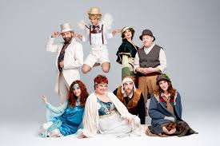

La Vida en Escena
12 de enero, 2025 - Teatro del Sol
Una obra que explora las emociones humanas a través de historias cotidianas.

Turandot
26 de enero, 2025 - Ópera Principal
La majestuosa ópera de Puccini que narra la historia de la princesa Turandot y sus enigmas.

El Amor de las Estaciones
14 de febrero, 2025 - Teatro del Alba
Una celebración del amor en sus múltiples formas a lo largo de las estaciones. 